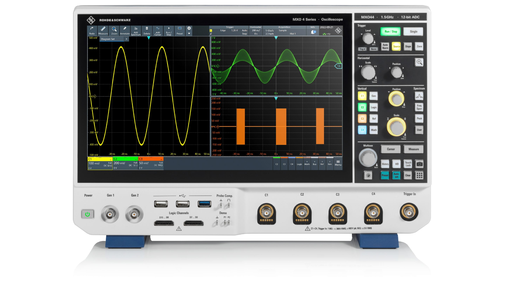
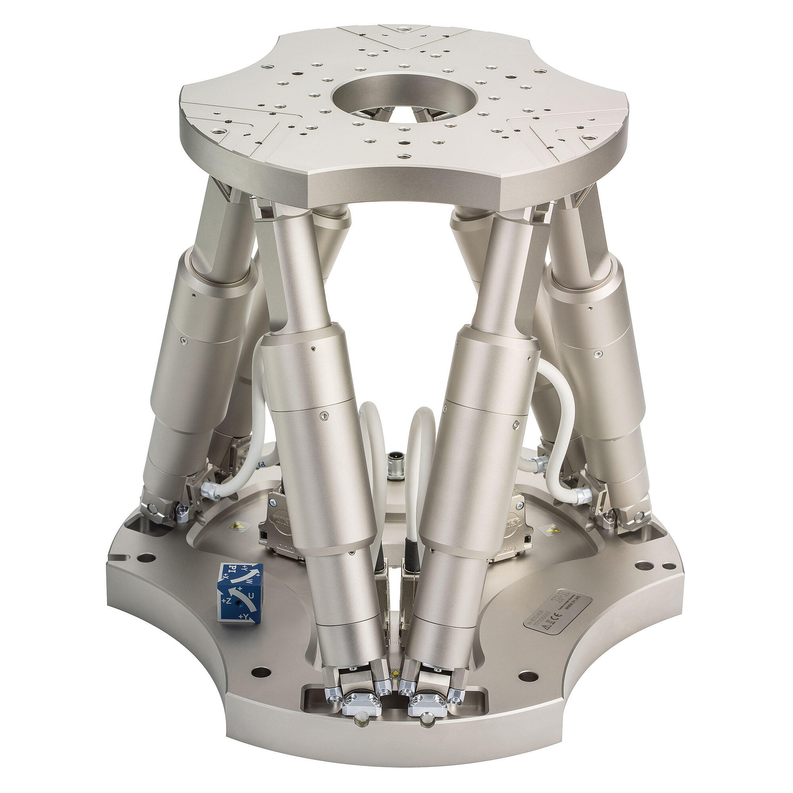
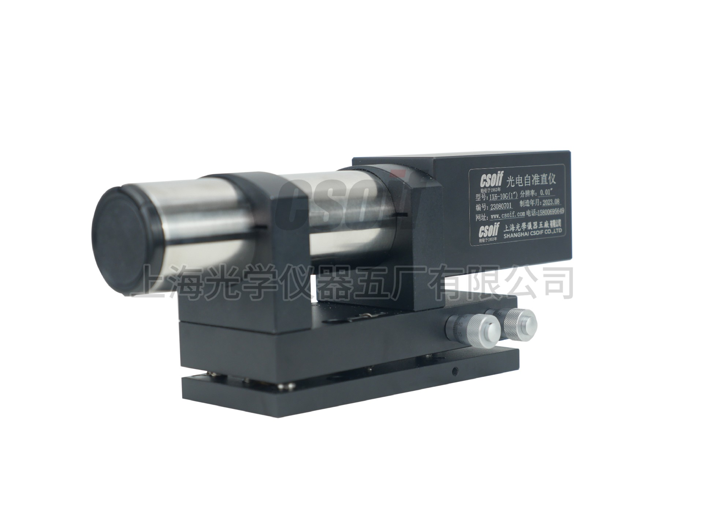
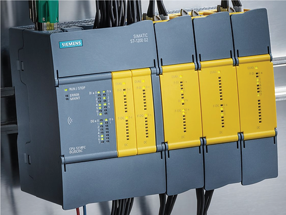

ATE Runner · 驱动软件管理方案
当前每个子系统各自维护驱动与用例，问题不随台型收敛而消失。本方案用三类发布物划出变更边界，用注册解析与锁定决定版本，用能力层仿真把回归从硬件上解耦。
型号变更需在多个包内重复改动；用例与驱动实现耦合，回归范围随台型数量线性增长。
同型号仪器在不同子系统各实现一次，命令用法与判据口径逐渐分叉，同一缺陷要修两处。
同一现象可能源自驱动、TPS 或台架配置，缺少统一诊断快照与明确的责任归属。
驱动被打进各 TPS 包内随用例分发，同一驱动存在多份副本，修复需逐包替换且版本无法统一。
四类问题不会随台型数量收敛而自动消失，需要通过管理策略规避：把驱动从子系统包与 TPS 包中剥离，建立独立的发布单元、版本边界与回滚能力。
分类之后，三类包各自的最大收益是：基础包覆盖八成台型，一次回归覆盖全平台；共享包独立发版，单包回滚分钟级生效；独立包现场自持，不拖累基线与主程序。
| 维度 | 基础包 BASELINE | 共享包 SHARED | 独立包 STATION |
|---|---|---|---|
| 定义 | 标准柜内固定配置，随平台版本发布，设备族保持十来个 | 多台型复用且非柜内标配，独立版本、独立发布 | 仅单一台型使用，随 TPS 或建台部署 |
| 归属判据 | ≥ 八成台型使用 | 2% – 八成台型使用，或停产与固件敏感 | 单一台型使用 |
| 发布节奏 | 随平台大版本，季度级 | 独立发版，月度级，支持灰度 | 随建台或换夹具 |
| 回滚粒度 | 整平台 | 单包单版本，改 lock 生效 | 单台 |
| 责任主体 | 平台组 | 包 owner，无主不入库 | 站点负责人 |




归属判定依据是复用面与变更风险，与技术相似性无关。示波器是标准柜内固定配置，进基础包；六足机器人与子准直仪多台型复用但非标配，进共享包；PLC 随单台 TPS 交付，即使只有一台也独立于平台驱动仓。
| 维度 | 基础包 | 共享包 | 独立包 |
|---|---|---|---|
| 代码产出物 | 契约实现 + 厂商适配，随平台仓维护 | 契约实现 + 命令表 + 能力层仿真 + 随包契约测试 | 契约实现的最小集合，随 TPS 交付 |
| 归档位置 | app/backend/drivers/<设备族>/ | drivers/packages/<名称>/同一代码仓、同一 PR 与门禁 | TPS 仓，不进入平台驱动仓 |
| 获取方式 | 随平台安装包，无需单独获取 | 制品仓按「包 + 版本」拉取，双哈希校验 | 随 TPS 部署，不入制品仓 |
| 推送方式 | 随平台发版，一次性下发 | CI 出制品并写索引；台架只读拉取，单向不回写 | 站点自行部署 |
| 更新方式 | 随平台升级 | 改 bench.lock 版本 → 拉取 → 重启 | 随 TPS 更新 |
| 版本与标签 | 跟随平台版本号 | 语义化版本 + git tag，多版本共存同一仓 | 随建台记录 |
| 变更影响面 | 全平台台型 | 使用该包的台架 | 单台设备 |
管理颗粒度 以「包 + 版本」为最小单元：仓统一（同一 PR 与门禁）、通道分开（stable / canary）。不按整仓发布，影响面过大；也不按文件发布，无法校验与回滚。
回滚 把 lock 里的版本改回旧值再拉取，其它包不动。软件侧不存在离线介质这一环，因此也没有「介质版本与索引不一致」这类现场问题。
| 层 | 职责 |
|---|---|
| L4 用例层 | 只依赖别名与能力，不出现包名、版本、型号 |
| L3 契约层 | 定义动作集合与返回结构，唯一对用例暴露的接口 |
| L2 解析层 | 依据台架装备属性与 lock 生成加载计划，唯一决定版本 |
| L1 包层 | 唯一允许出现厂商库的地方，实现契约并提供能力层仿真 |
运行时不在软件构建范围内，因此不作为独立层出现。分层只覆盖基础包与共享包；独立包随 TPS 打包交付、在 TPS 内自洽，不按此分层开发。
解析做六件事，任一步失败即拒绝启动并给出可执行提示，不做兜底降级。设备与型号的匹配由平台在台架注册时完成 —— 连接清单与型号 BOM 属于装备属性配置，用例作者和驱动开发者都不需要手工传入型号或地址。
| 步骤 | 输入 | 判定 | 失败处理 |
|---|---|---|---|
| 1 装备属性 | 台架注册时录入的连接清单与型号 BOM | 按 BOM 型号匹配能力与候选包 | 型号未登记，拒绝启动并列出缺失项 |
| 2 读 lock | benches/*/bench.lock.json | lock 的台型与当前台型一致 | 不一致，要求重新锁定 |
| 3 求解版本 | 注册表中的包清单 | 版本满足 ^ ~ >= 约束且不冲突 | 无解或多解，列出候选并拒绝 |
| 4 校验完整性 | 包目录内容 | tree_sha256 与 lock 记录一致 | 不一致，拒绝加载并重新导入 |
| 5 校验兼容 | manifest 的 runtime 段 | Runner 与 Python 在声明范围内 | 超范围，给出可用版本 |
| 6 出计划 | 解析结果 | 每个能力唯一映射到 包@版本 | 同能力两个版本，抛 VersionConflict |
标注「方案细节」的表格用于说明机制，不承担收益论证。收益在表 1 的发布节奏与回滚粒度两行。
| drivers/ | 仓根：契约、工具、包与台架绑定 |
| contracts/scope.py | 能力、方法、量纲的唯一来源 |
| kit/registry · resolve · conformance | 注册、解析、一致性套件 |
| runtime/session.py | 会话、资源仲裁、超时与诊断 |
| packages/rohde-schwarz-mxo/ | 一个共享包的全部内容 |
| manifest.json | 能力、契约、依赖、入口、owner |
| pkg/rs_mxo/driver.py | 契约实现，厂商库只出现在这里 |
| pkg/rs_mxo/scpi.py | 命令表与返回解析 |
| pkg/rs_mxo/simulate.py | 能力层仿真实现 |
| vendor/ | 厂商库离线副本，随包分发 |
| conformance/test_contract.py | 随包契约测试 |
| station-types/scope-bench.json | 台型 → 能力与版本约束 |
| benches/BENCH-DEMO/bench.lock.json | 锁定版本与目录哈希 |
| ci/pack.py | 出包、哈希、索引条目 |
| tests/ · tools/ | 流程测试与命令行入口 |
| 工作 | 产出 | 规模 |
|---|---|---|
| 实现契约子集 | driver.py 覆盖本设备用到的能力方法 | 1–2 天 |
| 写命令与解析 | scpi.py 命令表 + 返回字段解析 | 1–3 天 |
| 写能力层仿真 | simulate.py 返回合法结构与量纲 | 0.5 天 |
| 随包契约测试 | conformance/test_contract.py | 0.5 天 |
| 出包与登记 | zip + 索引条目 + 台架装备属性 | 0.5 天 |
{
"name": "vendor-model", "version": "1.0.0",
"capability": "oscilloscope", "contract": "1.0",
"entry": "vendor_model.driver:VendorScope",
"vendor_deps": ["VendorLib==2.3.1"],
"runtime": { "runner": ">=1.6", "python": ">=3.11" },
"simulate": true, "owner": "仪器驱动组"
}不再需要的动作：改平台仓、发主程序、逐台升级。这也是「新增设备不再触发主程序发版」这条判据的落点。
同一份契约实现，按 mode 分派到两个实现体：hardware 分支经厂商库下发命令并解析返回；simulate 分支由能力层仿真直接产出契约结构（波形、测量值、身份）。上层用例、解析器与会话代码完全一致 —— 所以仿真通过只证明「能力语义」正确，不证明「命令拼写」正确。
| 要素 | 做法 |
|---|---|
| 仿真位置 | L1 包层内部，与真机实现同目录、同契约、同调用路径 |
| 选择方式 | 台架装备属性写 mode=simulate 时选仿真分支；未写默认真机分支 |
| 能力覆盖 | 只覆盖该包声明实现的能力方法，未实现的能力保持不支持 |
| 返回值 | 结构完整、字段齐全、单位与量纲和契约一致 |
| 数值来源 | 固定模型生成，随量程与垂直档位变化，不读任何真实数据 |
| 链路状态 | 不介入连接、寻址与会话；地址仍由装备属性提供 |
| 门禁定位 | 进 CI 与双台型回归，替代无硬件环境的契约检查 |
| 禁止事项 | 不参与现场验收；真机核对通过前 verified_on_hardware 保持 false |
判定标准：仿真通过说明契约实现与解析链路正确；真机核对通过才说明驱动可用。两者不可互相替代。
| 阶段 | 周期 | 主要工作 | 交付物 | 准入判据 |
|---|---|---|---|---|
| P0 盘点与冻结 | 第 1–4 周 | 设备台账按能力聚类，收敛为 20 个能力族清单；逐族确定方法、参数、返回字段与量纲；出三类包归属表，逐台设备标注归属与责任人；冻结契约 1.0、装备属性字段、lock 格式 | 能力族清单 / 归属表 / 契约 1.0 | 契约与归属表通过评审，无未归属设备 |
| P1 仓库与门禁 | 第 5–10 周 | 建 contracts / kit / runtime / packages 四层目录；实现注册表、解析器、一致性套件与制品仓客户端；CI 出制品并写索引（zip → sha256 → index.json）；CI 三段门禁：契约 → 仿真 → 双台型回归 | 可运行骨架 + 制品仓 + 模板包 | 模板包可出制品，并被两台架按 lock 拉取成功 |
| P2 首个共享包试点 | 第 11–16 周 | 首个共享包（六足机器人 / 子准直仪）完成真机核对；两个台型按通道灰度：拉取 → 重启 → 记录差异；回滚演练：改 lock 回退版本并计时取证；平台注册表改为「基线 + 包清单」合并 | 首个共享包正式版 + 试点报告 | 回滚 ≤ 5 分钟，双台型回归全部通过 |
| P3 批量迁移与治理 | 第 17 周起 | 按台型分批迁移，每批 5–8 台，留两周观察窗；独立包登记进 TPS 清单，不进入平台驱动仓；维护包目录：owner、版本、EOL、兼容矩阵；季度复盘新增设备是否仍触发主程序发版 | 迁移台账 + 包目录 + 兼容矩阵 | 新增设备不再触发主程序发版 |
已完成 契约 / 注册表 / 解析器 / 一致性与仿真套件 / 制品仓与 lock 机制均可运行：一致性 13/13、流程测试 15/15、出制品可通过校验。
待完成 真机核对 5 处待核实命令、第二个共享包、平台侧按装备属性与 lock 加载的改造。